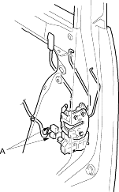
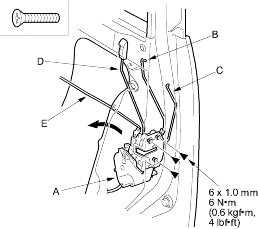
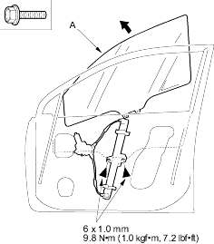

- Remove the screws, then remove the latch (A) through the hole in the door. Take care not to bend the outer handle rod (B), cylinder rod (C), lock rod (D) and inner handle rod (E).
| Fastener Locations |
 : Screw, 3 : Screw, 3 |

- Install the latch in the reverse order of removal and note these items:
- Make sure the actuator connectors are plugged in properly, and each rod is connected securely.
- Make sure the door locks and opens properly.
- Remove these items:
- Carefully raise the glass (A) until you can see the bolts, then remove them. Carefully pull the glass out through the window slot. Take care not to drop the glass inside the door.
Fastener Locations : Bolt, 2
